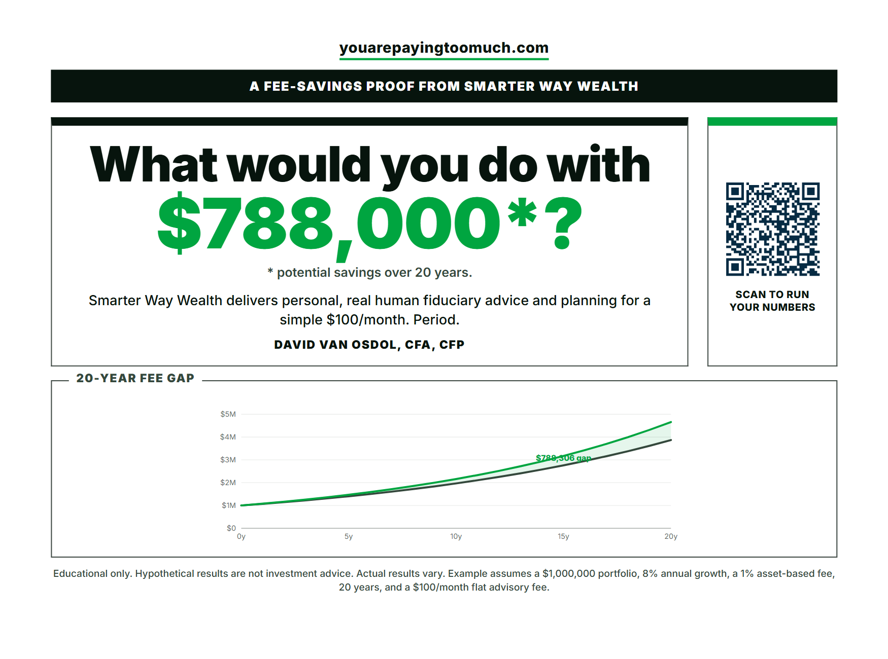
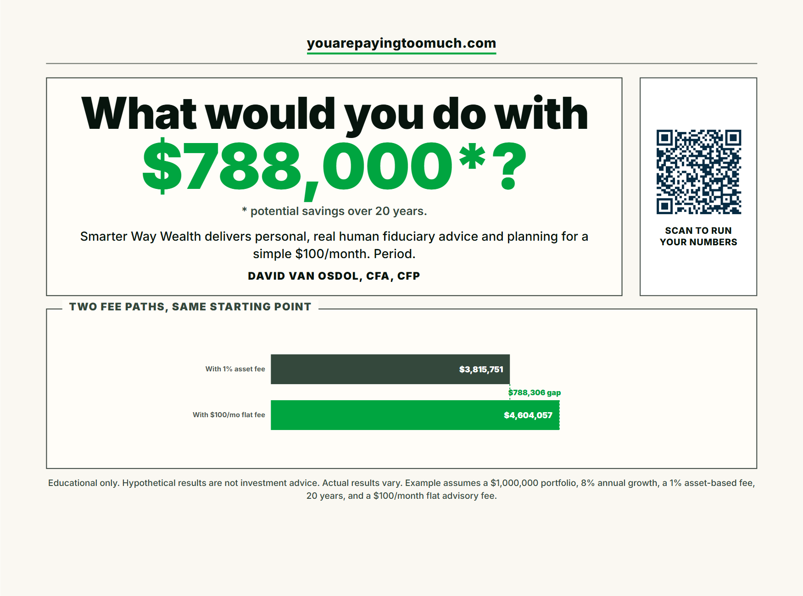
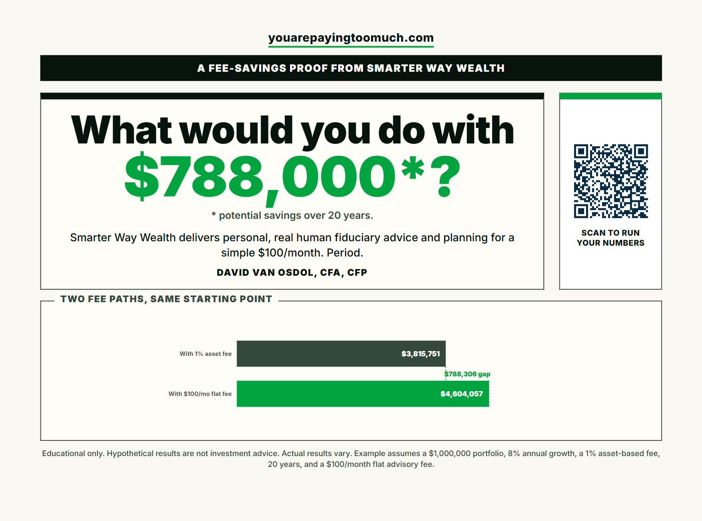

01. Editorial Callout Bands

02. Editorial Paper Bar

03. Editorial Framed Amalgam

Three V2 01-based revision candidates combining callout bands, cream paper/bar chart style, and stronger front-side framing.


